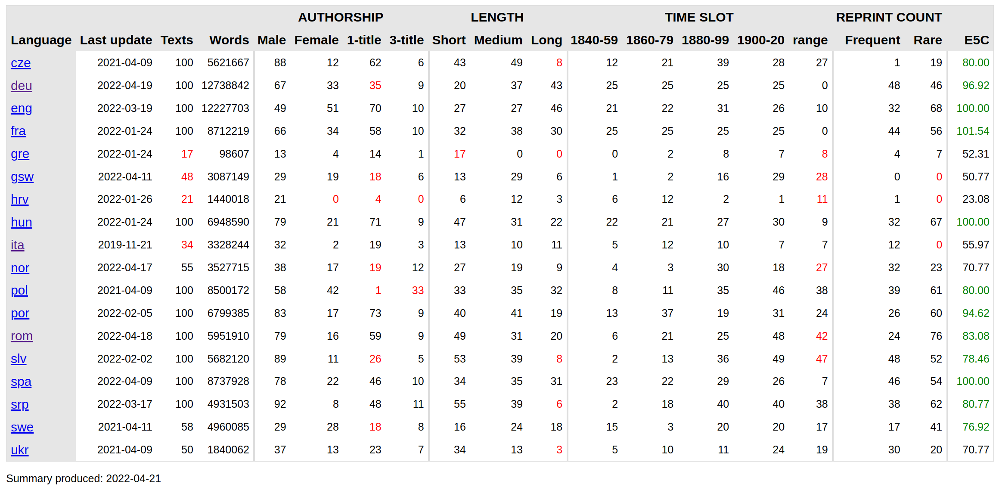

# What a difference 5 years make: <br/>Achievements and challenges of Distant Reading for European Literary History <img data-src="img/basics/distant-reading_logo.png" height="40"></img> <br/><br/> **Christof Schöch and Maciej Eder** *** Distant Reading Closing Conference, April 21-22, 2022 <br/>https://distantreading.github.io/closing/ *** <img data-src="img/basics/cost-and-eu.png" height="120"></img> :: -- ### Overview 1. [What was Distant Reading?](#/2) 2. [Scholarly Resources](#/3) 3. [Methods and Tools](#/4) 4. [Literary Theory and History](#/5) 4. [Dissemination](#/6) 5. [Conclusion](#/7) :: - What a difference 5 years make, 54 little months now... -- ## (0) What was Distant Reading? --- ### We've come a long way </img> * Fotis Jannidis launched the idea in 2014 <!-- .element: class="fragment fade-in-then-semi-out" data-fragment-index="1" --> * We applied several times until being awarded the grant in 2017 <!-- .element: class="fragment fade-in-then-semi-out" data-fragment-index="2" --> * Five years later: 200+ researchers from 31+ countries working together <!-- .element: class="fragment fade-in-then-semi-out" data-fragment-index="3" --> --- ### Research coordination objectives 1. To coordinate the creation of a multilingual European Literary Text Collection (ELTeC). <!-- .element: class="fragment fade-in-then-semi-out" data-fragment-index="1" --> 1. To use the ELTeC to establish best practices and develop innovative methods of Distant Reading for the multiple European literary traditions. <!-- .element: class="fragment fade-in-then-semi-out" data-fragment-index="2" --> 1. To engage in an investigation into the theoretical, methodological and practical consequences of Distant Reading approaches for literary history and literary theory. <!-- .element: class="fragment fade-in-then-semi-out" data-fragment-index="3" --> --- ### Capacity-building objectives 5. To foster the acquisition of state-of-the-art methods of Distant Reading, including competencies relating to data curation, standards, best practices and methods of Distant Reading analysis. <!-- .element: class="fragment fade-in-then-semi-out" data-fragment-index="1" --> 1. To encourage and support the submission of competitive grant proposals both at the national and European levels. <!-- .element: class="fragment fade-in-then-semi-out" data-fragment-index="2" --> 1. To help address the current gender imbalance. <!-- .element: class="fragment fade-in-then-semi-out" data-fragment-index="3" --> -- ## (1) Scholarly Resources --- ### Our key accomplishment:<br/>European Literary Text Collection (ELTeC) </img> --- ### Some key points about ELTeC * Some numbers <!-- .element: class="fragment fade-in-then-semi-out" data-fragment-index="1" --> * 10 complete collections (1000 novels) * 7 collections in progress (361 novels) * 9 extension collections (567 novels) * Some other facts <!-- .element: class="fragment fade-in-then-semi-out" data-fragment-index="2" --> * Encoded in XML-TEI (all collections) * Provided with annotations: POS and NER * Strong composition criteria for comparability --- ### What is ELTeC all about * A uniquely multilingual resource <!-- .element: class="fragment fade-in-then-semi-out" data-fragment-index="1" --> * A rallying point for a European, multilingual community <!-- .element: class="fragment fade-in-then-semi-out" data-fragment-index="2" --> * A benchmark corpus for the development and evaluation of cross-lingual methods <!-- .element: class="fragment fade-in-then-semi-out" data-fragment-index="3" --> * A key building block for a history of European literature that would be truly digital, multilingual and diverse <!-- .element: class="fragment fade-in-then-semi-out" data-fragment-index="4" --> -- ## (3) Methods and Tools --- ### Key concern: Annotating ELTeC * Levels of annotation <!-- .element: class="fragment fade-in-then-semi-out" data-fragment-index="1" --> * Part-of-speech annotation (standard) * Named Entity Recognition (desireable) * Character vs. narrator speech (sometimes) * Challenges <!-- .element: class="fragment fade-in-then-semi-out" data-fragment-index="2" --> * Make structural TEI markup coexist with token-level annotations * Ensure cross-language compatibility of pipelines and annotations -- ## (3) Literary Theory and History --- ### Several contributions * Titling practices in ELTeC (published paper) <!-- .element: class="fragment fade-in-then-semi-out" data-fragment-index="1" --> * The term/concept of the novel across Europe (map) <!-- .element: class="fragment fade-in-then-semi-out" data-fragment-index="2" --> * Distant reading and style, authorship, genre, period (submitted paper) <!-- .element: class="fragment fade-in-then-semi-out" data-fragment-index="3" --> * Inner life of characters (paper in progress) <!-- .element: class="fragment fade-in-then-semi-out" data-fragment-index="4" --> -- ## (4) Dissemination and Communication --- ### Many tangible outputs * Successful social media presence of the Action (Twitter and Facebook) <!-- .element: class="fragment fade-in-then-semi-out" data-fragment-index="1" --> * Informative Action portal and "Distant Reading Recommends" series <!-- .element: class="fragment fade-in-then-semi-out" data-fragment-index="2" --> * 32 publications from the Action (several in progress) <!-- .element: class="fragment fade-in-then-semi-out" data-fragment-index="3" --> * 15 presentations about the Action (probably several more) <!-- .element: class="fragment fade-in-then-semi-out" data-fragment-index="4" --> * A substatial number of affiliated grants at national, bi-national and international levels <!-- .element: class="fragment fade-in-then-semi-out" data-fragment-index="5" --> -- ## (5) Training and Exchange --- ### Many occasions for learning <a href="img/CA16204-2020.jpeg"></a> * Jointly organized Training Schools: Würzburg, Galway, Budapest, online, Belgrade <!-- .element: class="fragment fade-in-then-semi-out" data-fragment-index="1" --> * STSMs and VMGs: 34 exchanges lasting over 600 days in total <!-- .element: class="fragment fade-in-then-semi-out" data-fragment-index="2" --> * Major Action Meetings: Brussels, Prague, Antwerp, Lisbon, Málaga, online 2021, online 2022 <!-- .element: class="fragment fade-in-then-semi-out" data-fragment-index="3" --> -- ## Conclusion --- ### Achievements * Designing, encoding, annotating and using ELTeC is our key tangible accomplishment <!-- .element: class="fragment fade-in-then-semi-out" data-fragment-index="1" --> * Having helped an international, diverse, international, welcoming community of researchers constitute itself is just as important <!-- .element: class="fragment fade-in-then-semi-out" data-fragment-index="2" --> --- ### Challenges * Diversity (of people, history, and data) as a strength, a challenge, and a learning opportunity <!-- .element: class="fragment fade-in-then-semi-out" data-fragment-index="1" --> * How can we support further work on and with ELTeC, after the Action? <!-- .element: class="fragment fade-in-then-semi-out" data-fragment-index="2" --> * How will we balance Distant Reading and Computational Literary Studies in the future? <!-- .element: class="fragment fade-in-then-semi-out" data-fragment-index="3" --> --- ### Thank you all<br/>for making the Action what is is today! <img height="400" data-src="img/danke.png"> </small>